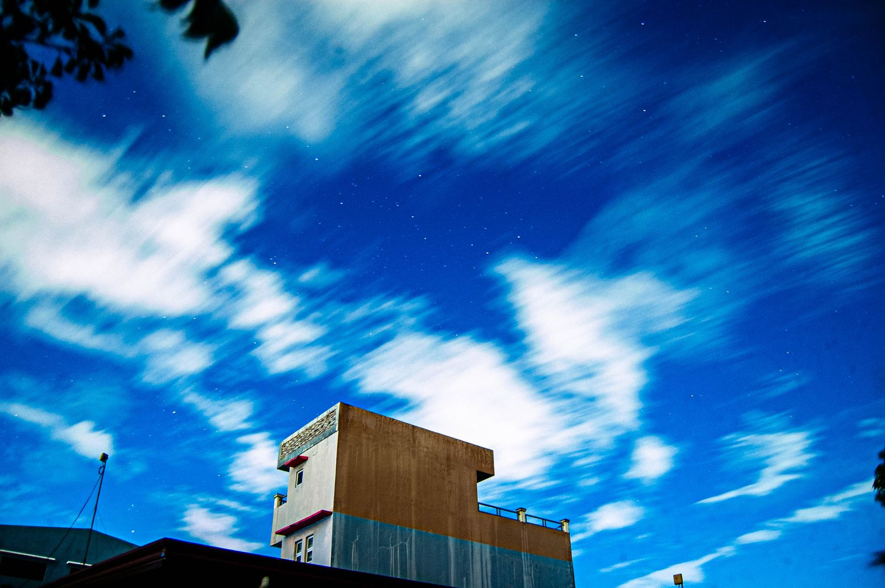
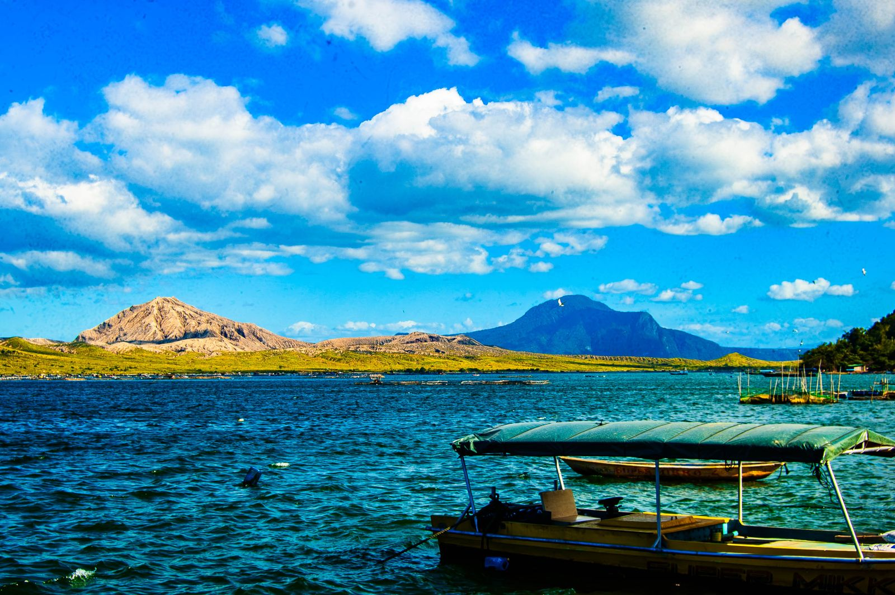
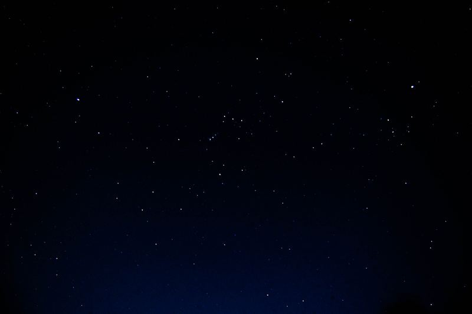

Multimedia mode
Creating memories, one frame at a time.
Roll 01
Aviation
6 frames


Roll 02
Landscape & sky
5 frames-

TagaytayISO 200 / f/9 / 1/320 / 32mm -
Taal VolcanoISO 200 / f/7.1 / 1/200 / 50mm -

Long exposureISO 1600 / f/3.5 / 15s / 18mm -
Fluffy cloudsISO 200 / 1/750 -
30 second shutterISO 1600 / f/3.5 / 30s / 18mm


About
Behind the camera
Photography and videography are two of the most important parts of my life. I have three years of photography experience and two years of videography experience, and I love using a camera to record moments and make memories.
I have a strong interest in aviation, and I also enjoy shooting landscapes, people and events. I like experimenting with different looks and methods, and I'm always looking for new challenges and chances to learn from others in the field.
Tools
Editing software
- Photo
- PhotoshopLightroomIllustratorAurora HDRGIMP
- Video
- Premiere ProAfter EffectsDaVinci Resolve